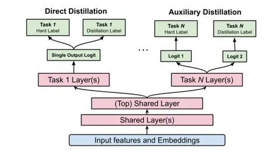

часть 2
Далее в статье описываются нюансы реализации. Авторы рассматривают:
1. Два возможных подхода к дистилляции:
🔹 Direct distillation — дистилляционный и основной лосс применяются к одному логиту в модели-ученике.
🔹 Auxiliary distillation — в модели-ученике есть два раздельных логита: для основного и для дистилляционного лосса. Схема показана на иллюстрации.
Второй вариант хорошо себя показал для задач предсказания LTV: в офлайн-замере RMSE он на 0,4% лучше direct-подхода. Это объясняется тем, что LTV — очень шумный и плохо откалиброванный таргет: большая модель выучивает биасы в данных и остаётся плохо откалиброванной. А потом передаёт свои биасы ученикам и приводит к зашумлению таргета. Поэтому лучше использовать два отдельных логита.
2. Какие таргеты стоит использовать для дистилляции. Все таргеты можно поделить на 3 группы: Engagement (например, клики), Satisfaction (лайки или досмотры) и остальные. Авторы отмечают, что лучше использовать только Engagement и Satisfaction — это даёт прирост +1,13% Satisfaction +0,39% Engagement относительно модели без дистилляции. Добавление дополнительных таргетов влияет на общие слои и ухудшает итоговые результаты.
3. Как комбинировать ученика и учителя. Архитектуры ученика и учителя похожи, главное отличие — глубина и ширина внутренних слоёв. Авторы провели онлайн-эксперименты для комбинаций, когда учитель больше ученика в 2 и в 4 раза: в 2 раза больший учитель позволил добиться прироста +0,42% Engagement и +0,34% Satisfaction относительно модели без дистилляции, в 4 раза больший учитель — +0,85% и +0,80% соответственно. Но эффект масштабирования не будет продолжаться бесконечно, а увеличивать учителя ещё сильнее сложно: во-первых, его нужно обучать на больших объёмах данных, за несколько месяцев. Во-вторых – поддерживать онлайн.
@RecSysChannel
Разбор подготовил
